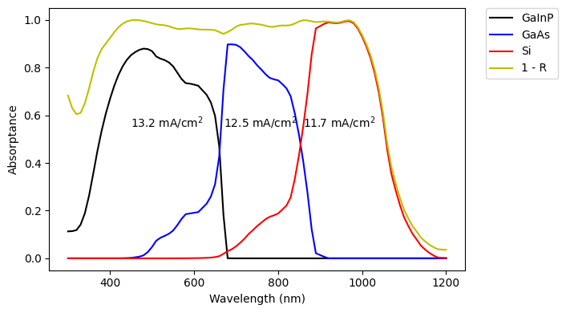
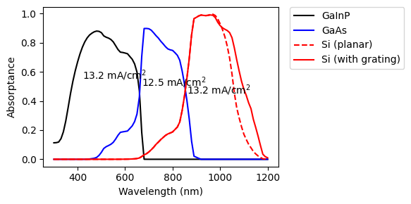

from solcore import material, si
from solcore.absorption_calculator import search_db, download_db
import os
from solcore.structure import Layer
from solcore.light_source import LightSource
from rayflare.transfer_matrix_method import tmm_structure
from rayflare.options import default_options
from rayflare.structure import Interface, BulkLayer, Structure
from rayflare.matrix_formalism import process_structure, calculate_RAT
from solcore.constants import q
import numpy as np
import matplotlib.pyplot as pltPlanar III-V on planar Si, with rear grating
In this example, we will build two structures similar to those described in this paper. These are both triple-junction, two-terminal GaInP/GaAs/Si cells; one cell is planar, while the other has a diffraction grating deposited on the rear of the bottom Si cell to boost its current.
Setting up
As before, we load some materials from the refractiveindex.info database. The MgF\(_2\) and Ta\(_2\)O\(_5\) are the same as the ARC example; the SU8 is a negative photoresist which was used in the reference paper The optical constants for silver are also loaded from a reliable literature source. Note that the exact compositions of some semiconductor alloy layers (InGaP, AlInP and AlGaAs) are not given in the paper and are thus reasonable guesses.
# download_db(confirm=True) # only needs to be run once
# commented out because this should have already been done in a previous example. Uncomment if necessary.%%capture
MgF2_pageid = search_db(os.path.join("MgF2", "Rodriguez-de Marcos"))[0][0];
Ta2O5_pageid = search_db(os.path.join("Ta2O5", "Rodriguez-de Marcos"))[0][0];
SU8_pageid = search_db("SU8")[0][0];
Ag_pageid = search_db(os.path.join("Ag", "Jiang"))[0][0];
MgF2 = material(str(MgF2_pageid), nk_db=True)();
Ta2O5 = material(str(Ta2O5_pageid), nk_db=True)();
SU8 = material(str(SU8_pageid), nk_db=True)();
Ag = material(str(Ag_pageid), nk_db=True)();
window = material("AlInP")(Al=0.52)
GaInP = material("GaInP")(In=0.5)
AlGaAs = material("AlGaAs")(Al=0.8)
GaAs = material("GaAs")()
Si = material("Si")()
Air = material("Air")()
Al2O3 = material("Al2O3P")()
Al = material("Al")()Defining the cell layers
Now we define the layers for the III-V top junctions, and the Si wafer, grouping them together in a logical way. In this example, we will only do optical simulations, so we will not set e.g. diffusion lengths or doping levels.
ARC = [Layer(110e-9, MgF2), Layer(65e-9, Ta2O5)]
GaInP_junction = [Layer(17e-9, window), Layer(400e-9, GaInP), Layer(100e-9, AlGaAs)]
tunnel_1 = [Layer(80e-9, AlGaAs), Layer(20e-9, GaInP)]
GaAs_junction = [Layer(17e-9, GaInP), Layer(1050e-9, GaAs), Layer(70e-9, AlGaAs)]
tunnel_2 = [Layer(50e-9, AlGaAs), Layer(125e-9, GaAs)]
Si_junction = [Layer(280e-6, Si)]
coh_layers = len(ARC) + len(GaInP_junction) + len(tunnel_1) + len(GaAs_junction) + len(tunnel_2)As for the InGaP//Si example, to get physically reasonable results we must treat the very thick layers in the structure incoherently. The coh_layers variable sums up how many thin layers (which must be treated coherently) must be included in the coherency_list options.
Planar cell
Now we define the planar cell, and options for the solver:
cell_planar = tmm_structure(
ARC + GaInP_junction + tunnel_1 + GaAs_junction + tunnel_2 + Si_junction,
incidence=Air, transmission=Ag,
)
n_layers = cell_planar.layer_stack.num_layers
coherency_list = ["c"]*coh_layers + ["i"] # Si to be treated incoherently
options = default_options()
wl = np.arange(300, 1201, 10) * 1e-9
AM15G = LightSource(source_type="standard", version="AM1.5g", x=wl,
output_units="photon_flux_per_m")
options.wavelength = wl
options.coherency_list = coherency_list
options.coherent = FalseRun the TMM calculation for the planar cell, and then extract the relevant layer absorptions. These are used to calculate limiting currents (100% internal quantum efficiency), which are displayed on the plot with the absorption in each layer.
tmm_result = cell_planar.calculate(options=options)
GaInP_A = tmm_result['A_per_layer'][:,3]
GaAs_A = tmm_result['A_per_layer'][:,8]
Si_A = tmm_result['A_per_layer'][:,coh_layers]
Jmax_GaInP = q*np.trapz(GaInP_A*AM15G.spectrum()[1], x=wl)/10
Jmax_GaAs = q*np.trapz(GaAs_A*AM15G.spectrum()[1], x=wl)/10
Jmax_Si = q*np.trapz(Si_A*AM15G.spectrum()[1], x=wl)/10
R_spacer_ARC = tmm_result['R']
plt.figure(figsize=(6,4))
plt.plot(wl * 1e9, GaInP_A, "-k", label="GaInP")
plt.plot(wl * 1e9, GaAs_A, "-b", label="GaAs")
plt.plot(wl * 1e9, Si_A, "-r", label="Si")
plt.plot(wl * 1e9, 1 - R_spacer_ARC, '-y', label="1 - R")
plt.text(450, 0.55, r"{:.1f} mA/cm$^2$".format(Jmax_GaInP))
plt.text(670, 0.55, r"{:.1f} mA/cm$^2$".format(Jmax_GaAs))
plt.text(860, 0.55, r"{:.1f} mA/cm$^2$".format(Jmax_Si))
plt.xlabel("Wavelength (nm)")
plt.ylabel("Absorptance")
plt.tight_layout()
plt.legend(loc='upper right')
plt.legend(bbox_to_anchor=(1.05, 1), loc=2, borderaxespad=0.)
plt.show()Database file found at /Users/z3533914/.solcore/nk/nk.db
Material main/Ag/Jiang.yml loaded.
Database file found at /Users/z3533914/.solcore/nk/nk.db
Material main/Ag/Jiang.yml loaded.
Database file found at /Users/z3533914/.solcore/nk/nk.db
Material main/MgF2/Rodriguez-de Marcos.yml loaded.
Database file found at /Users/z3533914/.solcore/nk/nk.db
Material main/MgF2/Rodriguez-de Marcos.yml loaded.
Database file found at /Users/z3533914/.solcore/nk/nk.db
Material main/Ta2O5/Rodriguez-de Marcos.yml loaded.
Database file found at /Users/z3533914/.solcore/nk/nk.db
Material main/Ta2O5/Rodriguez-de Marcos.yml loaded.
Cell with rear grating
Now, for the cell with a grating on the rear, we have a multi-scale problem where we must combine the calculation of absorption in a very thick (compared to the wavelengths of light) layer of Si with the effect of a wavelength-scale (1000 nm pitch) diffraction grating. For this, we will use the Angular Redistribution Matrix Method (ARMM) which was also used in the textured Si example.
The front surface of the cell (i.e. all the layers on top of Si) are planar, and can be treated using TMM. The rear surface of the cell, which has a crossed grating consisting of silver and SU8, must be treated with RCWA to account for diffraction. The thick Si layer will be the bulk coupling layer between these two interfaces.
First, we set up the rear grating surface; we must define its lattice vectors, and place the Ag rectangle in the unit cell of the grating. More details on how unit cells of different shapes can be defined for the RCWA solver can be found here.
x = 1000
d_vectors = ((x, 0), (0, x))
area_fill_factor = 0.4
hw = np.sqrt(area_fill_factor) * 500
back_materials = [
Layer(width=si("250nm"), material=SU8,
geometry=[{"type": "rectangle", "mat": Ag, "center": (x / 4, x / 4),
"halfwidths": (x/4, x/4), "angle": 0},
{"type": "rectangle", "mat": Ag, "center": (3*x / 4, 3*x / 4),
"halfwidths": (x/4, x/4), "angle": 0}])]Now, we define the Si bulk layer, and the III-V layers which go in the front interface. Finally, we put everything together into the ARMM Structure, also giving the incidence and transmission materials.
bulk_Si = BulkLayer(280e-6, Si, name="Si_bulk")
III_V_layers = ARC + GaInP_junction + tunnel_1 + GaAs_junction + tunnel_2
front_surf_planar = Interface("TMM", layers=III_V_layers, name="III_V_front",
coherent=True)
back_surf_grating = Interface("RCWA", layers=back_materials, name="crossed_grating_back",
d_vectors=d_vectors, rcwa_orders=60)
cell_grating = Structure([front_surf_planar, bulk_Si, back_surf_grating],
incidence=Air, transmission=Ag)Because RCWA calculations are very slow compared to TMM, it makes sense to only carry out the RCWA calculation at wavelengths where the grating has any effect. Depending on the wavelength, all the incident light may be absorbed in the III-V layers or in its first pass through the Si, so it never reaches the grating. We check this by seeing which wavelengths have even a small amount of transmission into the silver back mirror, and only doing the new calculation at these wavelengths. At shorter wavelengths, the results previously calculated using TMM can be used.
%%capture
wl_rcwa = wl[tmm_result['T'] > 1e-4] # check where transmission fraction is bigger
# than 1E-4
options.wavelength = wl_rcwa
options.project_name = "III_V_Si_cell"
options.n_theta_bins = 30
options.c_azimuth = 0.25
options.RCWA_method = "inkstone"
process_structure(cell_grating, options, save_location='current')
results_armm = calculate_RAT(cell_grating, options, save_location='current')
RAT = results_armm[0]INFO: Making matrix for planar surface using TMM for element 0 in structure
INFO: RCWA calculation for element 2 in structure
INFO: RCWA calculation for wavelength = 970.0 nm
INFO: RCWA calculation for wavelength = 1020.0 nm
INFO: RCWA calculation for wavelength = 990.0 nm
INFO: RCWA calculation for wavelength = 960.0000000000001 nm
INFO: RCWA calculation for wavelength = 1030.0 nm
INFO: RCWA calculation for wavelength = 1010.0000000000001 nm
INFO: RCWA calculation for wavelength = 950.0 nm
INFO: RCWA calculation for wavelength = 1000.0000000000001 nm
INFO: RCWA calculation for wavelength = 980.0000000000001 nm
INFO: RCWA calculation for wavelength = 940.0000000000001 nm
INFO: RCWA calculation for wavelength = 1040.0 nm
INFO: RCWA calculation for wavelength = 1050.0 nm
INFO: RCWA calculation for wavelength = 1060.0 nm
INFO: RCWA calculation for wavelength = 1070.0000000000002 nm
INFO: RCWA calculation for wavelength = 1080.0 nm
INFO: RCWA calculation for wavelength = 1090.0000000000002 nm
INFO: RCWA calculation for wavelength = 1100.0 nm
INFO: RCWA calculation for wavelength = 1110.0000000000002 nm
INFO: RCWA calculation for wavelength = 1120.0 nm
INFO: RCWA calculation for wavelength = 1130.0 nm
INFO: RCWA calculation for wavelength = 1140.0 nm
INFO: RCWA calculation for wavelength = 1150.0 nm
INFO: RCWA calculation for wavelength = 1160.0000000000002 nm
INFO: RCWA calculation for wavelength = 1170.0 nm
INFO: RCWA calculation for wavelength = 1180.0000000000002 nm
INFO: RCWA calculation for wavelength = 1190.0 nm
INFO: RCWA calculation for wavelength = 1200.0000000000002 nm
INFO: After iteration 1: maximum power fraction remaining = 0.7764879856885729
INFO: After iteration 2: maximum power fraction remaining = 0.5704138208482805
INFO: After iteration 3: maximum power fraction remaining = 0.4441404181149029
INFO: After iteration 4: maximum power fraction remaining = 0.3536271052552251
INFO: After iteration 5: maximum power fraction remaining = 0.2868308728411737
INFO: After iteration 6: maximum power fraction remaining = 0.2349206235240497
INFO: After iteration 7: maximum power fraction remaining = 0.1938248230987794
INFO: After iteration 8: maximum power fraction remaining = 0.1608886472341107
INFO: After iteration 9: maximum power fraction remaining = 0.13424774149215066
INFO: After iteration 10: maximum power fraction remaining = 0.11253583327874436
INFO: After iteration 11: maximum power fraction remaining = 0.09472560994236706
INFO: After iteration 12: maximum power fraction remaining = 0.08003142304692192
INFO: After iteration 13: maximum power fraction remaining = 0.06784492701128685
INFO: After iteration 14: maximum power fraction remaining = 0.05769034062600848
INFO: After iteration 15: maximum power fraction remaining = 0.049192364867005026
INFO: After iteration 16: maximum power fraction remaining = 0.042052696780568236
INFO: After iteration 17: maximum power fraction remaining = 0.03603257889647375
INFO: After iteration 18: maximum power fraction remaining = 0.030939681537594525
INFO: After iteration 19: maximum power fraction remaining = 0.026618145749183218
INFO: After iteration 20: maximum power fraction remaining = 0.02294096043807238
INFO: After iteration 21: maximum power fraction remaining = 0.019804081123656454
INFO: After iteration 22: maximum power fraction remaining = 0.017121859732076833
INFO: After iteration 23: maximum power fraction remaining = 0.01490520298288521
INFO: After iteration 24: maximum power fraction remaining = 0.013008158014877367
INFO: After iteration 25: maximum power fraction remaining = 0.011370638553633614
INFO: After iteration 26: maximum power fraction remaining = 0.00995390357391723WARNING: The RCWA solver will not be available because an S4 installation has not been found.
WARNING: The RCWA solver will not be available because an S4 installation has not been found.
WARNING: The RCWA solver will not be available because an S4 installation has not been found.
WARNING: The RCWA solver will not be available because an S4 installation has not been found.
WARNING: The RCWA solver will not be available because an S4 installation has not been found.
WARNING: The RCWA solver will not be available because an S4 installation has not been found.WARNING: The RCWA solver will not be available because an S4 installation has not been found.
WARNING: The RCWA solver will not be available because an S4 installation has not been found.
WARNING: The RCWA solver will not be available because an S4 installation has not been found.
WARNING: The RCWA solver will not be available because an S4 installation has not been found.
WARNING: The RCWA solver will not be available because an S4 installation has not been found.
WARNING: The RCWA solver will not be available because an S4 installation has not been found.
WARNING: The RCWA solver will not be available because an S4 installation has not been found.
WARNING: The RCWA solver will not be available because an S4 installation has not been found.
WARNING: The RCWA solver will not be available because an S4 installation has not been found.
WARNING: The RCWA solver will not be available because an S4 installation has not been found.
WARNING: The RCWA solver will not be available because an S4 installation has not been found.
WARNING: The RCWA solver will not be available because an S4 installation has not been found.
WARNING: The RCWA solver will not be available because an S4 installation has not been found.
WARNING: The RCWA solver will not be available because an S4 installation has not been found.Comparison of planar and grating cell
We extract the relevant absorption per layer, and use it to calculate the new limiting current for the Si junction. The plot compares the absorption in the Si with and without the grating.
Si_A_total = np.zeros(len(wl))
Si_A_total[tmm_result['T'] > 1e-4] = RAT['A_bulk'][0]
Si_A_total[tmm_result['T'] <= 1e-4] = Si_A[tmm_result['T'] <= 1e-4]
Jmax_Si_grating = q*np.trapz(Si_A_total*AM15G.spectrum()[1], x=wl)/10
plt.figure(figsize=(6,3))
plt.plot(wl * 1e9, GaInP_A, "-k", label="GaInP")
plt.plot(wl * 1e9, GaAs_A, "-b", label="GaAs")
plt.plot(wl * 1e9, Si_A, "--r", label="Si (planar)")
plt.plot(wl * 1e9, Si_A_total, '-r', label="Si (with grating)")
plt.text(420, 0.55, r"{:.1f} mA/cm$^2$".format(Jmax_GaInP))
plt.text(670, 0.50, r"{:.1f} mA/cm$^2$".format(Jmax_GaAs))
plt.text(860, 0.45, r"{:.1f} mA/cm$^2$".format(Jmax_Si_grating))
plt.legend(bbox_to_anchor=(1.05, 1), loc=2, borderaxespad=0.)
plt.xlabel("Wavelength (nm)")
plt.ylabel("Absorptance")
plt.tight_layout()
plt.show()
Questions
- Why does the grating only affect the absorption in Si at long wavelengths?
- What is the reason for using the angular redistribution matrix method, rather than defining an RCWA-only structure (
rcwa_structure)? - We did not explicitly set the Si to be incoherent in the second calculation (with the diffraction) grating, but we do not see any sharp interference fringes, indicating that interference in the Si was actually disregarded. Why?